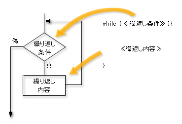
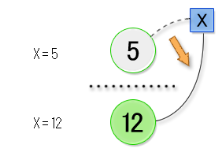
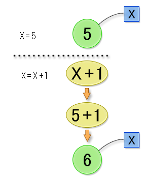
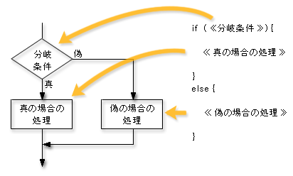

前章までに説明した範囲内では、簡単な処理をおこなうプログラムしか書けませんでした。 本章では、繰り返しや条件分岐などの複雑な処理をおこなうプログラムも書けるように、次の事柄について解説します。
今までは同じ処理を繰り返す場合、同じ文をいくつもプログラムに書くしかありませんでした。 たとえば第３章では、再帰的に定義された関数の値を表示するために、次のようなプログラムを書きました。#include <stdio.h>
int a(int n) {
return n == 0 ? 2
: a(n - 1) + 3;
}
int main() {
printf("a(0) = %d\n", a(0));
printf("a(1) = %d\n", a(1));
printf("a(2) = %d\n", a(2));
printf("a(3) = %d\n", a(3));
printf("a(4) = %d\n", a(4));
return 0;
}この例では、計算して表示するのは a(0) から a(4) までの 5 個ですが、この数がもっと多くなるとプログラムが非常に長くなってしまいます。例えば a(0) から a(49) までの 50 個になると、50 行も同じような文を繰り返し書かなければなりません。コピー＆ペーストすればいいのですが、あまり効率的とはいえません。
C言語には、このような単純な繰り返し処理を簡潔に書くための構文が用意されています。その構文を使うと、上のプログラムは次のように書き直せます。#include <stdio.h>
int a(int n) {
return n == 0 ? 2
: a(n - 1) + 3;
}
int main() {
/* 変数 x を 0 から 4 まで変化しながら繰り返す */
int x = 0;
while (x <= 4) {
printf("a(%d) = %d\n", x, a(x));
/* 変数 x の値を 1 増やした新しい値に変更 */
x = x + 1;
}
return 0;
}11 行目に書かれている while が繰り返し処理を表しています。これは、while の直後にある括弧 ( ) で囲まれた式が示す条件が満たされるまで、 括弧に続く中括弧 { } で囲まれた部分を繰り返し計算する、という処理を意味します。
while (《繰り返し条件》) {
《繰り返し内容》
}という形をした部分全体を while 文といいます。複数行にわたっていますが、これまで出てきた他の文の仲間です。while 文はプログラム中で文が書けるところならどこにでも書けますし、他の文と並べて書くこともできます。なお、細かいことですが、while 文の最後にはセミコロン ; をつけません。
繰り返し条件には、しばしば第 2 章で説明した比較演算子をつかった式を書きます。上の while 文では、「変数 x の値が 4 以下であること」が条件になっています。繰り返し内容には、任意の文をいくつでも（0 個でも 1 個でも 2 個でも）並べて書くことができます。
while 文の実行が始まると次のように計算がおこなわれます。最初、10 行目で宣言した変数 x の値は 1 であるため、繰り返し条件を満たしています。そこで繰り返し処理の部分の計算がおこなわれます。まず関数 a(x) の値を計算して表示します。次に変数 x の値を 1 増やした値に変更します。これで繰り返し処理 1 回分は終了です。そこで再び繰り返し条件を調べ、満たしていれば繰り返し処理の部分の計算を（変数 x の新しい値を使って）おこないます。これを何回か繰り返すと、やがて変数 x の値が 5 に変更されるので、繰り返し条件が成り立たなくなり、while 文の処理全体が終わります。（クリックすると拡大します）
関数定義の本体のところに複数個の文が書いてある場合、一般に上の文から下の文へ順番に計算が進んでゆきます。プログラムの中では、一般に「上から下へ計算が進んでゆく」のが基本なのです。ところが while 文は、この「上から下に計算が進んでゆく」原則にしたがいません。繰り返しの度に、下から上へ戻って再び計算がやり直されるからです。このように計算の順序を変更する文のことを、制御構文と呼びます。C言語には、while 文のほかに if 文、for 文、do while 文、switch 文などの制御構文があります。これらについては後ほど説明します。
変数への代入
さて上のプログラムの 14 行目にはx = x + 1;という文を書いて、変数 x の値を 1 増やしました。しかし = を等号と解釈すると、変数 x と x + 1 の値が等しい、ということになってしまい、矛盾するように見えます。以下では、この文の解釈について理解を深めたいと思います。
実は C言語における等号は == （イコール記号 2 つ）であり、= は代入演算子と呼ばれるもので等号とは異なります。代入演算子は、演算子の右側の式の計算結果を、左側の変数の新しい値とする演算子です。つまり、右側の式 x + 1 を計算した結果の値が、変数 x の新しい値になります。これをしばしば「変数 x に x + 1 の計算結果を代入する」といいます。C言語では、代入演算子が使えるので、計算が進むにつれて同一の変数の値が変化してゆく可能性があります。このため、C言語のプログラムを読むときは、各行の計算を 1 行ずつ追ってゆき、それぞれの変数の値がどのように変化してゆくのか確かめながらプログラムを読むことが大切です。
（クリックすると拡大します）
代入に関する理解を深めるため、先のプログラムを while 文を使わずに書いてみましょう。
#include <stdio.h> int a(int n) { return n == 0 ? 2 : a(n - 1) + 3; } int main() { /* 変数 x を 0 から 4 まで変えながら繰り返す */ int x = 0; printf("a(%d) = %d\n", x, a(x)); x = x + 1; /* （変数 x の値 + 1）が示す値をを変数 x に代入する */ printf("a(%d) = %d\n", x, a(x)); x = x + 1; printf("a(%d) = %d\n", x, a(x)); x = x + 1; printf("a(%d) = %d\n", x, a(x)); x = x + 1; printf("a(%d) = %d\n", x, a(x)); return 0; }14、17、20、23 行目で代入により変数 x の値を変更しています。
（クリックすると拡大します）
複合代入演算子
上の説明では例としてx = x + 1;という文が登場しましたが、このように代入演算子の左辺と右辺に同じ変数 (例の場合は x) がくることがしばしばあります。 そのような場合に式を簡潔に書けるよう、C言語には += という演算子が用意されています。 例えば上の文はx += 1;と書いても同じです。 左辺の変数の値に右辺の式の値を加えて得た値を、新しい値として左辺の変数に代入します。 同様に考えてx += 2 + 3;はx = x + (2 + 3);と同じ意味です。 += の仲間の演算子として他にも -= や *=、/=、%= などがあります。変数の宣言と初期化
代入を覚えると混乱しがちなのが、変数の宣言と変数への代入の違いです。これまで変数を定義して使うには、次のように書いて使用を宣言しなければなりませんでした。これを変数の宣言といいます。《データ型》 《変数名》 = 《値》;データ型のところには int のような型の名前を書きます。= の右側には変数の初期値を計算する式を書きます。実は = 記号と初期値を計算する式は省略できるので、それらを書いて具体的な初期値を宣言と同時に与えることを初期化する、といいます。もちろん、初期値の型はデータ型のところに書いた型と一致していなければなりません。double 型の変数の初期値が int 型の整数値であってはいけません。一方、代入は次のように書きました。《変数名》 = 《値》;文の先頭にはデータ型を書きません。また = の右側の式の計算結果の値の型は、最初に = の左側の変数が宣言されたときの型と一致していなければなりません。代入をおこなう文は、たとえ同一の変数に対してであっても、何回でも繰り返し書くことができます。一方、各変数は（同一関数の中では）1 回しか宣言することができませんし、またその変数に新しい値を代入する前には、必ずその変数を宣言しなければなりません。例えば次のプログラムは誤りです。変数 x の型は int であると宣言されているのに、8 行目では double 型の値を代入しようとしているからです。#include <stdio.h> int main() { int x = 1; printf("%d\n", x); x = 5.03; /* 変数 x は int 型のため、浮動小数点数を代入できない */ printf("%d\n", x); return 0; }入れ子になった繰り返し
while 文の中の《繰り返し内容》のところには、任意の文をいくつでも書くことができます。したがって、ここに while 文を書くこともできます。例えば次のプログラムを見てください。#include <stdio.h> int main() { int i = 0; while (i < 3) { int j = 0; while(j < 3) { printf("i = %d, j = %d\n", i, j); j = j + 1; } i = i + 1; } return 0; }while 文の中に別な while 文が書かれています。これを実行すると、まず内側の繰り返し処理が先に実行され、次に外側の繰り返し処理が実行されます。プログラムの実行結果は次のようになります。i = 0, j = 0 i = 0, j = 1 i = 0, j = 2 i = 1, j = 0 i = 1, j = 1 i = 1, j = 2 i = 2, j = 0 i = 2, j = 1 i = 2, j = 2ところで 7 行目で変数 j が宣言されていますが、この変数の有効範囲（これをスコープといいました）は 7 行目から 13 行目までです。その変数宣言の行から下の行で、かつその変数宣言を囲む一番内側の { } の内部が有効範囲です。したがって、その外側の例えば 15 行目の return 文をreturn j;のように書き直すと、15 行目では変数 j は既に無効なのでエラーとなります。代入は何回でも可能ですが、変数の宣言は 1 回しか許されませんでした。上のプログラムでは、7 行目から 13 行目までが、i < 3 である間、繰り返し実行されます。したがって 7 行目の変数宣言によって変数 j が何回も宣言されることになりますが、エラーではありません。エラーになるのは、ある変数宣言の有効範囲内で、再び同じ名前の変数が宣言された場合です。上のプログラムでは、13 行目の計算が終わって、6 行目のwhile (i < 3) {へ戻るとき、一度、変数 j の有効範囲を抜けます。したがって再び 7 行目で変数 j が宣言されても、先に宣言された変数 j は既に無効になった後であると考えるので、エラーになりません。演習４−１
二重の入れ子にした while 文を利用して、九九の表を表示するプログラムを作成してください。
第 2 章で説明した 3 項演算子を使うことで、以下の例のようにある条件を満たすか否かで式の値を変えることができました。int a(int n) { return n == 0 ? 1 : n * a(n - 1); }3 項演算子では条件の後ろに単純な式しか書くことができません。これでは不便なため、条件によって計算する内容が複雑な場合には、3 項演算ではなくif 文を利用します。 上のプログラムを if 文を使って書き直すと以下のようになります。int a(int n) { if (n == 0) { return 1; } else { return n * a(n-1); } }if 文は、次のような構成になっています。if (《分岐条件》) { 《条件が真の場合の処理》 } else { 《条件が偽の場合の処理》 }分岐条件が真の場合には、分岐の直後の中括弧 { } で囲まれた部分が計算されます。この部分には while 文や別な if 文など任意の文をいくつでも書くことができます。また、特に計算することがなければ何も書かないことも可能です。一方、分岐条件が偽の場合は、else の直後の中括弧 { } で囲まれた部分が計算されます。こちらも任意の文をいくつでも書くことができます。二つの中括弧の中は必ずどちらか一方だけが計算され、両方が計算されることはありません。中括弧の中に代入文などが含まれていると、このどちらか一方しか計算されないという性質が大切になります。どちらを計算したかによって、その後の変数の値が変わってくるかもしれないからです。
（クリックすると拡大します）
より複雑な条件
if 文の具体的な利用方法として、閏年かどうかを判定して、結果を表示するプログラムを作成してみます。閏年とは、西暦での年号が以下の条件を両方満たす年です。
- 年が 4 で割り切れる
- 年が 100 で割り切れないか、または年が 400 で割り切れる
このような複雑な条件は、今まで説明していた演算子だけでは実現できません。「かつ」や「または」といった複雑な条件の場合には、論理演算子と呼ばれる演算子を使います。論理演算子には、以下に示すものがあります。
演算名 C言語での表現 論理積 and && 論理和 or || 否定 not ! 論理演算子は、条件式の間に書くことで複数の条件の組み合わせを表現できます。 たとえば「変数 x の値が 3 でも 4 でも割り切れる」ことを表す条件をC言語で書くと以下のようになります。
x % 3 == 0 && x % 4 == 0また、論理演算子には他の演算子と同じように優先順位があり、括弧 ( ) を使うことでその順序を変えることができます。なお、論理演算子を含む式は複雑になりがちですので、優先順位に関係なく括弧でくくるとプログラムが読みやすくなります。たとえば、先ほどの条件は以下のように書き直すことができます。((x % 3) == 0) && ((x % 4) == 0)ここまでに説明した演算子の優先順位を整理すると以下のようになります。
優先順位 演算子 高 ! *, /, % +, - >, <, >=, <=; ==, != && || 低 ? : (3項演算子) 以上を元にして、閏年の判定をするプログラムを書いてみましょう。変数 seireki が閏年が判定したい西暦年を表すとします。#include <stdio.h> int main() { /* 閏年判定をしたい年数 */ int seireki = 2008; if (seireki % 4 == 0 && (seireki % 100 != 0 || seireki % 400 == 0)) { printf("閏年です\n"); } else { printf("閏年ではありません\n"); } return 0; }
for 文による繰り返し処理
本章では最初に while 文を使って繰り返し処理をプログラムにする方法を説明しました。C言語には繰り返しをプログラムするための別な構文も用意されています。これを for 文といいます。for 文を使うと、冒頭で示した while 文を使って a(0) から a(4) までの値を計算して表示するプログラムは次のように書き直せます。#include <stdio.h> int a(int n) { return n == 0 ? 2 : a(n - 1) + 3; } int main() { /* 変数 i を 0 から 4 まで変えながら繰り返す */ for (int i = 0; i <= 4; i = i + 1) { printf("a(%d) = %d\n", i, a(i)); } return 0; }10 行目の for から始まる行が繰り返し処理を指定するための文です。 for は、for の直後にある括弧 ( ) で囲まれた部分に示す条件で、それに続く中括弧 { } で囲まれた部分を繰り返し計算します。繰り返しの条件
for 文は全体として次のような形をしています。《繰り返し条件》にしたがって《繰り返し内容》を何度も計算するのは while 文と同じです。また while 文と同様、文の末尾にセミコロン ; は不要です。for (《初期化》; 《繰り返し条件》; 《変化方法》) {
《繰り返し内容》
}《初期化》は for 文で繰り返し処理を開始する前に計算することを書きます。通常は for 文の中で利用する変数を宣言・初期化するのに使います。上のプログラムの場合は int i = 1 と書いて、for 文の中で繰り返し回数を記録する変数 i を宣言しています。なお、この変数の有効範囲（スコープ）は for 文の中だけです。したがって 10 行目から 12 行目の間でだけ有効です。《繰り返し条件》には、その for 文で繰り返し処理を継続する条件を書きます。while 文の繰り返し条件と同様です。上の例では、初期化部分で宣言した変数 i の値が 4 以下であることを条件にしています。つまり変数 i の値が 4 より大きくなれば繰り返し処理を終了するということです。《変化方法》には for 文での繰り返し処理の最後に毎回実施する計算を書きます。while 文と同じように、《繰り返し内容》の部分の最後に書いても良いのですが、繰り返し処理の条件の変化を明確にするために、《初期化》部分で宣言した変数はここで値を変更するのが一般的です。上の例では《初期化》部分で宣言した変数 i の値を 1 増やす計算をしています。なお《変化方法》は省略して何も書かなくてもかまいません。以上を整理すると、上の例の for 文の計算は次のようになります。
初期化 i の値は 0 繰り返し条件 i <= 4 が真のため継続 繰り返し内容 変化方法 i の値は 1 繰り返し条件 i <= 4が真のため継続 繰り返し内容 変化方法 i の値は2 ・・・ 変化方法 i の値は4 繰り返し条件 i <= 4は真のため継続 繰り返し内容 変化方法 i の値は 5 繰り返し条件 i <= 4は偽のため終了 ところで《繰り返し条件》を間違えて、永遠に偽にならないような式を書いてしまったらどうなるのでしょうか。たとえば上のプログラムの 10 行目を間違えて
for (int i = 0; i <= 4; i = i + 1) {《変化方法》は省略してもよいので、上のプログラムは誤りではありませんが、変数 i の値が変化しなくなってしまいます。あるいはfor (i = 0; i <= 4; i = i + 1) {と書いて実行したらどうなるでしょう。答えは、いずれの場合も、プログラムが永遠に終了しない、です。++ 演算子と -- 演算子
上の例では変数 i の値を 1 増やすのに i++ と書きました。この ++ はインクリメント演算子といいます。似た演算子にデクリメント演算子があり i-- のように使います。i-- を計算すると変数 i の値が 1 減ります。どちらも for 文と一緒によく使われる演算子です。インクリメント演算子やデクリメント演算子は、変数の前につけて ++i や --i のように書くこともできます。それらの場合も、式を計算すると変数 i の値が 1 増えます（減ります）。ただし厳密には意味が少し異なり、次のような例では計算結果が異なってきます。今、変数 i の値が 5 だとすると、int j = ++i;の場合、宣言された変数 j の値は 6 です。計算終了後の変数 i の値も 6 です。ところが、int j = i++;の場合、宣言された変数 j の値は 5 です。一方、計算終了後の変数 i の値は 6 になります。デクリメント演算子 -- の場合も同様です。int j = --i;の場合、変数 i の元の値が 5 であれば、計算終了後の変数 i と j の値は共に 4 ですが、int j = i--;の場合、計算終了後の変数 j の値は 5 のままで、変数 i の値だけが 4 になります。インクリメント演算子やデクリメント演算子が変数 i の前にあると、まず変数 i の値を 1 増やした（減らした）後の値が式 ++i や --i 全体の計算結果となります。一方、それらの演算子が変数 i の後ろにあると、まず変数 i の元の値が式 i++ や i-- 全体の計算結果となります。ただし、計算終了後、変数 i の値が（こっそり）1 増えたり減ったりします。
インクリメント演算子やデクリメント演算子の扱いは、このように少し注意が必要です。しかし for 文の《変化方法》のところに i++ や i-- などと書く分には、そのような注意は不要ですから、これらの演算子がよく使われます。古い for 文
上の説明では《初期化》のところにint i = 0つまりfor (int i = 0; i <= 4; i = i + 1) {などと書いてきました。こう書くと、新しい変数 i が宣言されます。しかし、必ず新しい変数を宣言しなければならないわけでなく、すでに宣言済みの変数に新しい値を代入するだけでもかまいません。for (i = 0; i <= 4; i = i + 1) {と書くこともできます。ただし、変数 i は for 文より前の行で既に宣言されていなければなりません。実は for 文の《初期化》のところにint i = 0などと変数宣言を書けるようになったのは、比較的新しいC言語の仕様からで、古いC言語（のコンパイラ）では変数宣言は書けませんでした。その場合は、変数は前の行で宣言しておいて、for 文の《初期化》では新しい値を代入するだけにします。例えばint i = 0ではなくi = 0と書きます。冒頭のプログラムを古い形式の for 文で書き直すと以下のようになります。#include <stdio.h>
int a(int n) {
return n == 0 ? 2
: a(n - 1) + 3;
}
int main() {
int i;
/* 変数 i を 0 から 4 まで変えながら繰り返す */
for (i = 0; i <= 4; i = i + 1) {
printf("a(%d) = %d\n", i, a(i));
}
return 0;
}main 関数の最初の行が変数 i の宣言です。変数名 i とセミコロン ; の間に = 0 などと初期値が書いてありませんが、誤りではありません。初期値を書かなかった場合、その変数の初期値は適当に決められます。その値が何であるかは実行してみないとわかりません。後で正しい初期値をその変数に代入しなければなりません。上の例では、for 文の《初期化》のところで、それを実行しているわけです。switch 文
条件によって計算内容を変えたいときには if 文を使えばよい、と説明しました。if 文の else に続けて別な if 文を書くことができるので、次のようなプログラムを書くことができます。このプログラムは、1 月は 31 日、4 月は 30 日・・・というように、各月の日数を返す関数 days を定義しています。ここでは if 文は、条件を次々に当てはめていって、一致したら、条件が真の場合の計算をおこなうために使われています。int days(int month) {
if (month == 1) {
return 31;
}
else if (month == 2) {
return 29;
}
else if (month == 3) {
return 31;
}
else if (month == 4) {
return 30;
}
else if (month == 5) {
return 31;
}
else if (month == 6) {
return 30;
}
else if (month == 7) {
return 31;
}
else if (month == 8) {
return 31;
}
else if (month == 9) {
return 30;
}
else if (month == 10) {
return 31;
}
else if (month == 11) {
return 30;
}
else if (month == 12) {
return 31;
}
else {
return -1;
}
}まず最初の if 文で引数 month の値が 1 であるかを調べています。1 であれば 31 を戻り値として関数 days の計算を終了します。そうでなければ else に続く計算を実行します。それは 2 つ目の if 文です。上のプログラムは結局、次のようにプログラムの余分な { } を省略して、インデントを変えたものなのです。int days(int month) {
if (month == 1) {
return 31;
}
else {
if (month == 2) {
return 29;
}
else {
if (month == 3) {
return 31;
}
else {
/* 省略 */
}
}
}
}このような場合に、もう少し簡潔にプログラムを書けるように、C言語には switch 文が用意されています。switch 文を使って書き直したプログラムを示します。int days(int month) {
int days;
switch (month)
{
case 1:
days = 31;
break;
case 2:
days = 29;
break;
case 3:
days = 31;
break;
case 4:
days = 30;
break;
case 5:
days = 31;
break;
case 6:
days = 30;
break;
case 7:
days = 31;
break;
case 8:
days = 31;
break;
case 9:
days = 30;
break;
case 10:
days = 31;
break;
case 11:
days = 30;
break;
case 12:
days = 31;
break;
default:
days = -1;
break;
}
return days;
}switch に続く括弧内の式（この場合は month）の値が、各 case に続く値（整数定数でなければなりません）と一致するか調べ、一致したら switch の行 (3 行目）からその case の行までジャンプします。どれにも一致しなければ default とある行へジャンプします。break 文は、それが含まれる switch 文の外、つまりその switch 文の次の文へジャンプしろ、という意味を持ちます。break 文がないと、その次の行以降も計算してしまいますので、break 文を忘れないように注意が必要です。
演習 4−2
ユークリッドの互除法で最大公約数を求める関数を作成し、以下の数値の組み合わせの最大公約数を表示するプログラムを書いてください。
- 85 と 100
- 1025 と 820
演習 4−3
2 次方程式の解の公式を使い、2 次方程式の解を求めて表示する関数を作成してください。 解がない場合は「解が求められません」と表示するようにしてください。 さらに、以下の 2 次方程式の解を表示するプログラムを作成してください。
- 2x2 - 9.2x + 5.1 = 0
- 3x2 + 13.5x - 34.9 = 0
Copyright 2009-2011 the Compview project,
Tokyo Institute of Technology. All rights reserved.
{kind=link}
{kind=link}
{kind=link}
{kind=link}
{kind=link}